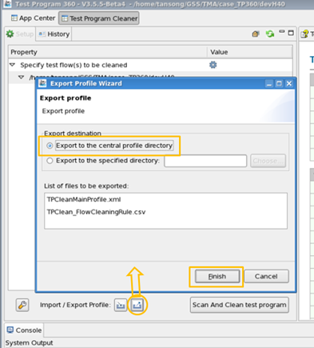
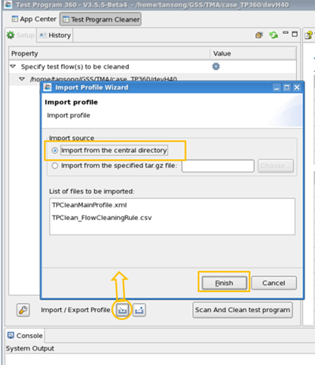

Central profile
Central profile is directory which stores the configuration of the supported TP360 modules. Users can access this directory to load the profile and initialize TP360.
About this task
There are three modules in TP360 that you can save their configurations in a profile:
Before you begin
Make sure you have the permission to access the central profile directory.
Procedure
Example
- Taking the Test Program Cleaner as an example. Open TP360 in command mode: /opt/hp93000/tp360/run –p /tmp/Jason_tp360_profile.
- Launch Test Program Cleaner, TP360 is warning to initial the central profile directory.
- Configure the Test Program Cleaner.
- Click "export" icon to open Export page, and choose "export to central profile"
- Click "Finish" to export.

- (Optional) you can verify this export by close TP360, and repeat step 1, step 2, TP360 will
auto load the configuration you have exported to the central profile. Or do some changes, and
then manually click "Import" to import from central directory.

What to do next
If you have changed the content of the central profile, please notice other engineers so that they can import the latest profile.
Functional changes
- Introduced in SmarTest 7.3.3